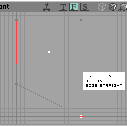
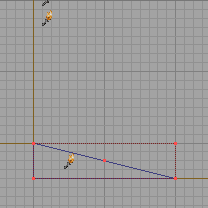
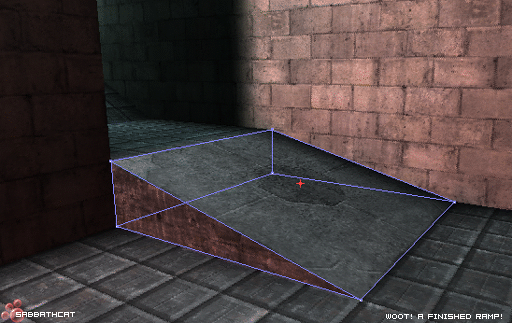

Making Ramps
A quick pictorial guide on ramp-making techniques
Vertex Edited Ramps
Assumtions
I'm assuming here that you already know how to.
These type of ramps are useful for making sloping coridors between rooms mainly, but once you get the hang of the technique, you can apply it to all manner of potential uses. |
![[rampmake01]](images/rampmake01.gif) |
Selecting the vertices on the cube
- First off, you'll need a cube.
- Click the
![[button.mode.vertex]](images/button-mode-vertex.gif) button to switch to vertex editing mode.
button to switch to vertex editing mode. - Select the lower corner in either of the side views.
- Hold CTRL+ALT+LeftMouse and Drag to make a selection rectangle around the lower corner as seen in the first image.
'Make sure the brush is selected when you do this, otherwise the vertices won't be selected.'

|
Draging the selected vertices on the cube.
Now you've selected the vertices, you'll want to drag them down to make your ramp.
- Hold CTRL+LeftMouse and Drag downwards. You should keep the Grid at least 16UU or preferably 64UU to keep the angles neat for saving on those nasty BSP Holes.
In the example I've used a GridSize of 16 and dragged the vertices to make a nice 1:2 gradient slope. Note: Try and keep slopes less than 45 degrees, anything more becomes difficult for bots to negotiate.
Subtracting the brush.
If you've got your ramp the way you want it looking, simply subtract and texture! 
I've just done a simple example here, but there are plenty more things you can do by simply moving the
ends of a cube around, from making sloped walkways, corridors that slope at both ends.. Many, many possible permutations on the simple technique.
Check out the Vertex Editing page to find out more on the subject, or alternatively, scroll some more to find out about Brush Clipping to get those ramps.
Brush Clipped Ramps
Starting with a basic cuboid 64x256x256
- Select the Brush Clipping tool
![[button.mode.clip]](images/button-mode-clip.gif)
- Click the vertices as demonstrated in the second picture, you should get a little pin icon to mark where the clipping line will start and end.
![[rampmake05]](images/rampmake05.gif) |
- In this picture I have placed the two clipping markers and flipped the clipping normal (the line pointing perpendicular to the clip plane to illustrate which side of the brush will be lopped off.)
- Use the
![[button_flip_clip]](images/button-flip-clip.gif) button to flip the line and choose which side you want to remove.
button to flip the line and choose which side you want to remove.
![[rampmake06]](images/rampmake06.gif) |
- In this picture I've now clicked the button and chopped off the top of the cuboid to make a triangular prism shape. If it doesn't work, chances are you've managed to deselect the builder brush. Click on it again to get it bright red and try again.

|
- The brush has now been added and the Cube Builder has been reset.

|
- The fantastic ramp in all its glory. Obviously after practice you'll be making something a bit more interesting that this pie-slice example.

Happy Clipping..
For more info on brush clipping, see Brush Clipping
Related Topics
- Reference for the Toolbox
- UnrealEd interface
- Architecture topics
- Making Ramps
- Mapping Lessons